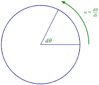
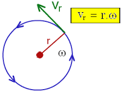

angular velocity
Two different perspectives for measuring a particle's motion are its angular velocity and its linear velocity.
The angular velocity of a particle traveling on a circular path is the ratio of the angle traversed to the amount of time it takes to traverse that angle.
ω = θ/t

Linear Velocity
Linear velocity is the velocity of the object travelling in a straight line or in other words the body is said to be moving with linear velocity when its direction is not changing.
Linear velocity, as we know, depends on the distance an object travels with respect to time. The linear equation or the linear formula is given below:

Linear Velocity & angular velocity
Linear velocity applies to any object or particle that moves, while angular velocity applies to those that turn (such as a wheel, the revolution of the earth, or a spinning top).
To determine linear velocity (linear displacement over time) from angular velocity, apply the formula: v=wr , where ω is expressed in radians/time and r is the radius of the path taken (or the radius of the object, if it is spinning).